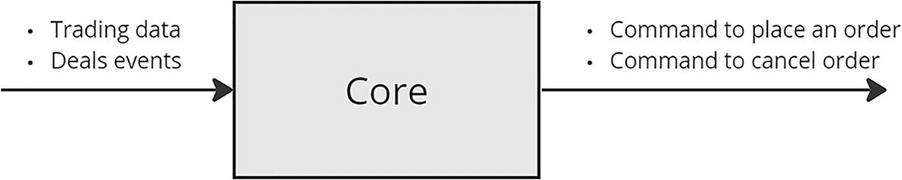
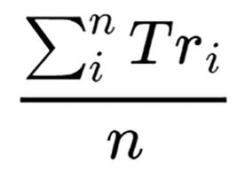
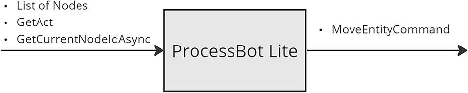

8. Implementation of the Core Module
© The Author(s), under exclusive license to APress Media, LLC, part of Springer Nature 2024
V. DolzhenkoAlgorithmic Trading Systems and Strategies: A New Approachhttps://doi.org/10.1007/979-8-8688-0357-4_8
8. Implementation of the Core Module
Viktoria Dolzhenko1
(1)
San Jose, Costa Rica
In this chapter, I will show my implementation of the main component, namely, the kernel of the entire system. This will be used both in the subsystem for searching for a profitable strategy and in the subsystem for real trading. The main purpose of this module is to give signals to the broker to place or close orders on the exchange, based on trading information (see Figure 8-1).

A process flow of the core module intakes trading data, deals with events, and gives the commands to place an order and cancel the order.
Figure 8-1
Core module input and output data
Use Cases
Before we begin, I would like to remind you of the operating logic of the parts of the subsystem for searching for a profitable strategy and the real trading subsystem, which directly interact with the Core module.
The logic of searching for a profitable strategy is based on the generation of theories, which in turn generate subtheories. Subtheories, using optimization algorithms, generate strategies. To calculate a strategy on a certain interval of historical data, a task is created, which contains the strategy identifier and the TestCandleInterval identifier. For a task to be calculated, it must be placed in the queue for calculation. A queue is a separate table in the database. Queue processing will be handled by a special application, for which several pods will be created in Kubernetes.
The scenario for using the Core module in the subsystem for searching for a profitable strategy is as follows:
-
1.
One of the task queue handler pods picks up the next task.
-
1.
This loads information about historical data in the form of an array of candles and starts a loop to process them.
-
1.
At each iteration, this notifies Sandbox Exchange when new candles appear. Sandbox Exchange, in turn, notifies the Core module about any changes in the order statuses.
-
1.
After notifying Sandbox Exchange, the application notifies the Core module about the appearance of a new candle.
-
1.
The Core module performs calculations and gives a command to place or close an order on the exchange.
We have decided on the logic of using the Core module in the strategy search subsystem; let me remind you how this module will be used in the real trading subsystem:
-
1.
The Tasks App of the Strategy Manager Service, based on information about the types of instruments and the list of profitable strategies, “decides” that it is necessary to activate the strategy-instrument pair.
-
1.
The Tasks App of the Strategy Manager Service calls the API App method of the Strategy Service indicating that this pair needs to be activated.
-
1.
The Strategy Service API App makes a note in its database that the strategy-instrument pair is now active.
-
1.
One of the free Worker App pods of the Strategy Service starts working with a new pair.
-
1.
This subscribes to events about the appearance of new candles of the selected instrument.
-
1.
When an event occurs about the appearance of a new candle, the Worker App notifies the Core module.
-
1.
The Core module performs calculations and gives a command to place or close an order on the exchange.
-
1.
The Worker App sends an Exchange Gateway API command to place or close an order.
-
1.
When information about a change in order status comes from the exchange, the Worker App again notifies the Core module about this.
Both of these scenarios are designed for the Core module to work with only one strategy-instrument pair at a time. I specifically focused on this in the chapter where we discussed the architectural solution. There were two reasons for this.
First, the instrument can be very volatile, and therefore, with a large number of strategies running on one pod, a situation may arise in which the pod will not have time to process all messages about candle changes. Second, this approach allows you to further isolate running strategies from each other, because they will cache frequently used information.
As a result, I identified the following list of external commands and events to which the Core module will respond:
-
InitContextCommand. This command is used to initialize frequently used information.
-
UpdateCandleEvent. This message is generated when candles are updated.
-
CancelExchangeOrderEvent. This message notifies the module about the fact that the order has been cancelled by the broker.
-
CloseExchangeOrderEvent. This message notifies the module about the fact of complete execution of the order on the exchange.
-
CreateDealEvent. This message comes when a deal is executed on the exchange.
In turn, the Core service calls only one command, a handler, which must be implemented in an external application—PlaceOrderCommand—a command to place an order on the exchange. I did not add a command to cancel the order. We discussed this point in Chapter 4. Since the system will implement system orders, which are responsible for the logic of order execution, it was decided in this implementation to place only market orders on the exchange, which are usually executed instantly.
I would also like to draw your attention to the fact that events about changes in candles will only come on candles at intervals of a minute, because other candles can be easily calculated based on minute candles. This is also because many exchanges and brokers require a subscription to a separate web socket connection channel for each candle interval and, of course, limit the number of such subscriptions and connections.
Context
At this stage, I will not fill the context with all the necessary information, because I still don’t know what might be needed. But I will lay the foundation for this mechanism. The context will be a singleton, which is filled with information in the InitContextCommand command handler.
I leave the job of ensuring that there is a single instance of the StrategyContext context class entirely to IServiceCollection. To do this, I created a static CoreServiceCollectionExtensions class and added a line to it that declared the StrategyContext context, as shown in Listing 8-1.
public static IServiceCollection AddCore(
this IServiceCollection services)
{
services.AddSingleton
return services;
}
Listing 8-1
Core Module Connection Function
In the context initialization command class, InitContextCommand has so far added only the minimal required information, as shown in Listing 8-2.
public class InitContextCommand: IRequest
{
public required int ExchangeId;
public required int InstrumentId;
public required int StrategyId;
}
Listing 8-2
InitContextCommand Class
Update Candle Event
This event is emitted by an application that uses the Core library. Core contains a handler for this. I implemented the event class very simply, as shown in Listing 8-3. For this we only need a candle. You may need more information later, but for now this is enough.
When implementing Event, I use a new feature of .NET 8 called primary constructors, which allow you to increase code readability. You can get more information about this at https://learn.microsoft.com.
public class UpdateCandleEvent(Candle candle) : INotification
{
public readonly Candle Candle = candle;
}
Listing 8-3
UpdateCandleEvent Class
Perhaps it’s worth revealing the implementation of Candle. At the same time, I will remind you of what fields this concept consists of. Listing 8-4 shows the implementation of this, as well as all the values of the CandleInterval enum. I implemented all the fields as required to make sure they were filled out in addition to the necessary fields that identify the candle, such as ExchangeId, InstrumentId, and Interval. This, of course, contains the Open, Close, High, and Low prices: the open, close, highest, and lowest price for the period of the candle, respectively. In addition to prices, candles also contain the volume of all past transactions (Volume) and the opening date of the candle (OpenDate).
public record Candle
{
public required int ExchangeId;
public required int InstrumentId;
public required CandleInterval Interval;
public required decimal Open;
public required decimal Close;
public required decimal High;
public required decimal Low;
public required decimal Volume;
public required DateTime OpenDate;
}
public enum CandleInterval
{
_1min = 1,
_2min = 2,
_3min = 3,
_5min = 5,
_10min = 10,
_15min = 15,
_30min = 30,
hour = 60,
_4hour = 240,
day = 1440,
week = 10080,
month = 43200
}
Listing 8-4
Candle Record
When the event about the appearance of a new minute candle arrives, you need to do these three things:
-
Check that the candle belongs to the current context.
-
Check system orders, as they require certain actions when trading information arrives.
-
Calculate signals and, if necessary, emit commands to place orders.
Listing 8-5 shows my implementation of a handler for this minute candle event. In this, I performed basic checks to ensure that the candle matches the context. Next, I called the UpdateCandle function on the context. Very soon I will show the implementation of this function, but now I will say that all candles of the required intervals are updated. This will be needed when calculating signal values. After all, they can use not only minute candles but also candles of other intervals. After updating the candles in the context, I sequentially processed the commands for checking orders and signal values.
public async Task Handle(UpdateCandleEvent notification, CancellationToken cancellationToken)
{
Candle newCandle = notification.Candle;
if (newCandle.ExchangeId != _strategyContext.ExchangeId)
return;
if (newCandle.InstrumentId != _strategyContext.InstrumentId)
return;
_strategyContext.UpdateCandle(newCandle);
await _mediator.Send(new CheckSystemOrdersCommand(), cancellationToken);
await _mediator.Send(new CheckSignalsCommand(), cancellationToken);
}
Listing 8-5
Handle Function of UpdateCandleEvent Handler
Check Signals
Signal values are checked in the CheckSignalsCommand command handler. Listing 8-6 shows the implementation of the signal check command handler.
Here’s what happens:
-
1.
SignalData is being calculated, and then I will analyze this class in detail. The most important thing is that it contains a field SignalValue of type bool?, containing the value of the signal true, false, or null. If this is null, then this means that signal calculation is currently impossible. The fact is that many indicators require the availability of historical candle data, which means that if the data has not been accumulated, then the calculation is impossible.
-
1.
If at least one of the signals cannot be calculated, then the processing of the command stops, because it is impossible to say whether it is possible to open or close a position.
-
1.
Further, if the signal to open a position and close a position is positive, then this situation is considered contradictory, and a position is not opened or closed.
-
1.
If the opening signal is triggered, the position opening command is called.
-
1.
If the close signal is triggered, all open positions are closed. As my experience has shown, the ability to open multiple positions has a positive effect on the quality of strategies.
public async Task
CheckSignalsCommand request,
CancellationToken cancellationToken)
{
int openSignalId = _strategyContext.Strategy.OpenSignalId;
int closeSignalId = _strategyContext.Strategy.CloseSignalId;
SignalData openSignalData =
await _mediator.Send(new CalculateSignalCommand(openSignalId));
SignalData closeSignalData =
await _mediator.Send(new CalculateSignalCommand(closeSignalId));
bool? openPosition = openSignalData.SignalValue;
bool? closePosition = closeSignalData.SignalValue;
if (!openPosition.HasValue
|| !closePosition.HasValue
|| openPosition.Value && closePosition.Value)
return true;
if (openPosition.Value)
await _mediator.Send(new OpenPositionCommand());
else if (closePosition.Value)
await _mediator.Send(new ClosePositionsCommand());
return true;
}
Listing 8-6
CheckSignalsCommand Handler
Strategy Model
Before we move on to implementing the signal calculation command, it is necessary to implement a model of this. Let me remind you the main aspects of this entity.
-
The purpose of the signal is to calculate a yes/no response.
-
The yes/no answer is obtained by calculating the value of the root group conditions.
-
There are two types of groups: with an AND condition and with an OR condition. .
-
Each conditions group can contain both child groups and conditions.
-
Conditions represent a condition for comparing the values of two indicators.
Listing 8-7 shows an implementation of the Signal class. Since this is an entity, it contains an Id field. The Name field contains a description for the UI. In addition, it contains a Condition field. As was said earlier, Condition has a hierarchical structure, so Condition is not a list.
public class Signal
{
public required int Id;
public required string Name;
public required Condition Condition;
}
Listing 8-7
Signal Class
The Condition class presented in Listing 8-8 looks more interesting.
public class Condition
{
public required Guid Code;
public required int Index;
public required bool IsGroup;
public required List
public required ConditionGroupType? GroupType;
public required int? Indicator1Id;
public required ConditionType? ConditionType;
public required int? Indicator2Id;
}
Listing 8-8
Condition Class
I added the following fields to this class:
-
Code. This will be needed in many places in our program, for example, when setting the value of a parameter of one of the condition indicators.
-
Index. This field is required to determine the order in which the UI will be displayed to the user. It is very unpleasant when the sequence of conditions changes after saving and updating the page with the signal.
-
IsGroup. This field is necessary to understand whether the condition is a group or a full-fledged condition with indicators.
-
Conditions. If the condition is a group, then of course it contains children. They are stored in this parameter.
-
GroupType. This is a field of type enum with only two values AND and OR.
-
Indicator1Id. This is the ID of the first indicator.
-
ConditionType. This is the type of condition for comparing identifier values. It is represented as an enum with six possible values: Equality, Inequality, Less, LessOrEqual, Greater, and GreaterOrEqual.
-
Indicator2Id. This is the second indicator ID.
Knowing the structure of the class that represents a signal, we can describe the SignalData class. Listing 8-9 shows an implementation of this. I added Id to this field so that SignalData and the list of indicator values can be linked. Please note that in the SignalDataIndicatorValues class I did not use the IndicatorId field but instead introduced an IsIndicator1 field of type bool. That is, if it is true, then this is the value of Indicator1Id in the condition; otherwise, it’s Indicator2Id. I did this on purpose, because there are strategies where the values of the same indicator are compared, but at different candle intervals.
public class SignalData
{
public long Id;
public required int ExchangeId;
public required int InstrumentId;
public required int StrategyId;
public required DateTime CandleTime;
public required int SignalId;
public bool? SignalValue;
public List
}
public class SignalDataIndicatorValues
{
public required string ConditionCode;
public required bool IsIndicator1;
public required decimal? IndicatorValue;
public required int CandleBackNumber;
}
Listing 8-9
SignalData Class
At this stage, we have everything we need to implement the strategy model. Let me remind you that the main goal of the strategy is to contain the identifiers of signals for opening and closing a position, as well as the values of all parameters necessary to calculate all identifiers of the selected signals. Listing 8-10 shows an implementation of the Strategy class. This is an entity, which means it has its own identifier. I also added the Name field to contain a description for U. OpenSignalId and CloseSignalId are identifiers of the selected signals.
Pay attention to the three fields SignalId, ConditionCode, and IsIndicator1 in the classes StrategySignalParam and StrategySignalCandle, which are used to accurately determine the parameters of which indicator were set. StrategySignalParam contains information about the values of all indicator parameters; this is a list of values for the IndicatorParamTypeId field, which will be provided by a separate library for calculating indicators. The StrategySignalCandle class contains the CandleIntervalId field, which is the identifier of the candle interval at which the indicator value is calculated, as well as CandleFrom and CandleTo, which determine at what depth this calculation should be performed.
public class Strategy
{
public required int Id;
public required string Name;
public required int OpenSignalId;
public required int CloseSignalId;
public required List
public required List
}
public class StrategySignalParam
{
public required int SignalId;
public required string ConditionCode;
public required bool IsIndicator1;
public required int IndicatorParamTypeId;
public required decimal ParamValue;
}
public class StrategySignalCandle
{
public required int SignalId;
public required string ConditionCode;
public required bool IsIndicator1;
public required int CandleIntervalId;
public required int CandleFrom;
public required int CandleTo;
}
Listing 8-10
Strategy Class
Since strategy and signals have become complex entities whose parameters will most likely be needed in command handlers, it is necessary to add repository interfaces for retrieving entities, as well as enrich the StrategyContext class with new parameters.
Listings 8-11 shows a new implementation of the InitContextCommand command handler. I get the object of the strategy and the necessary signals. Since these entities are received only once when the strategy is launched, it is necessary to keep in mind that when the strategy or signals change, it is necessary to restart the strategy.
public async Task
InitContextCommand request,
CancellationToken cancellationToken)
{
_strategyContext.ExchangeId = request.ExchangeId;
_strategyContext.InstrumentId = request.InstrumentId;
_strategyContext.Strategy =
await _strategyRepository.GetAsync(request.StrategyId);
_strategyContext.Signals =
await _signalRepository.GetAsync([
_strategyContext.Strategy.OpenSignalId,
_strategyContext.Strategy.CloseSignalId,
]);
return true;
}
Listing 8-11
InitContextCommand Handler
Calculate Signal
Let's start implementing the CalculateSignalCommand command handler. The task is to return the result of calculating signal data in the form of an instance of the SignalData class and also save this data to the database. The user will need this data to check the correctness of the calculations and the operation of the entire algorithm.
Listing 8-12 shows the implementation of the central command handler function. I fill in some fields of the command handler class that I will need in other functions. Then I create an instance of the SignalData class. I call the calculation function condition CalculateCondition. Please note that I have placed the SignalData instance into the class fields. I did this so that the calculation functions could add the calculated indicator values to this.
public async Task
CalculateSignalCommand request,
CancellationToken cancellationToken)
{
_signal = _strategyContext.Signals
.First(s => s.Id == request.SignalId);
_signalData = new()
{
ExchangeId = _strategyContext.ExchangeId,
InstrumentId = _strategyContext.InstrumentId,
StrategyId = _strategyContext.Strategy.Id,
CandleTime = _strategyContext.LastCandle!.OpenDate,
SignalId = _signal.Id,
};
_signalData.SignalValue = CalculateCondition(_signal.Condition);
_signalData = await _signalDataRepository.SaveAsync(_signalData);
return _signalData;
}
Listing 8-12
CalculateSignalCommand Handler
The implementation of the CalculateCondition function is quite simple. This is where the calculation function is selected. If this is a condition group, then the CalculateGroupCondition function is called; otherwise, CalculateNotGroupCondition is called. Listing 8-13 shows my implementation of the CalculateCondition function.
private bool? CalculateCondition(Condition condition)
{
bool? conditionValue = false;
if (condition.ItsGroup)
conditionValue = CalculateGroupCondition(condition);
else
conditionValue = CalculateNotGroupCondition(condition);
return conditionValue;
}
Listing 8-13
CalculateCondition Function
The condition group calculation function is a loop in which each child condition is calculated and a decision is made about the value of the entire group depending on its type. If it is of type AND, then all the conditions of the groups and conditions contained in it must be satisfied. If it is of type OR, then only one condition is sufficient. To calculate the value of child conditions, I use the previously written CalculateCondition function. The interesting thing about this function is the fact that I calculate all child conditions, although I could stop at the first false condition for a group with type AND, for example. This is because to check the correctness of the calculations, I want to see all the indicator values, and for this they need to be calculated. Listing 8-14 shows the implementation of this function.
private bool? CalculateGroupCondition(Condition condition)
{
bool? conditionValue = condition.GroupType == ConditionGroupType.And;
bool oneOfChildIsNull = false;
foreach (Condition childCondition in condition.Conditions)
{
bool? childConditionValue = CalculateCondition(childCondition);
if (!childConditionValue.HasValue)
{
oneOfChildIsNull = true;
break;
}
conditionValue = (condition.GroupType == ConditionGroupType.And)
? conditionValue.Value && childConditionValue!.Value
: conditionValue.Value || childConditionValue!.Value;
}
conditionValue = oneOfChildIsNull ? null : conditionValue;
return conditionValue;
}
Listing 8-14
CalculateGroupCondition Function
Please note how I solved the problem that some of the conditions could not be calculated. I created a variable oneOfChildIsNull, and if it is true, then only the child conditions are calculated, and the result of executing the entire function will be null.
A more interesting function is the function for calculating nongroup conditions. To do this, you need to obtain the depths of the candles from the signal settings and then check the conditions on each of the candles. For example, if the condition is configured like this:
indicator_1 candle from = 0 - candle to = 2
<
Indicator_2 candle from = 3 - candle to = 4
then the calculation is made on five-minute candles and the new candle has an opening date equal to 2024-02-10T10:45:00; then for the condition value to be positive, all conditions must be met.
-
indicator_1 on 2024-02-10T10:45:00 < Indicator_2 on 2024-02-10T10:30:00 (minus 3 times for 5 minutes)
-
indicator_1 on 2024-02-10T10:45:00 < Indicator_2 на 2024-02-10T10:25:00 (minus 4 times for 5 minutes)
-
indicator_1 on 2024-02-10T10:40:00 < Indicator_2 на 2024-02-10T10:30:00 (minus 3 times for 5 minutes)
-
indicator_1 on 2024-02-10T10:40:00 < Indicator_2 на 2024-02-10T10:25:00 (minus 4 times for 5 minutes)
-
indicator_1 on 2024-02-10T10:35:00 < Indicator_2 на 2024-02-10T10:30:00 (minus 3 times for 5 minutes)
-
indicator_1 on 2024-02-10T10:35:00 < Indicator_2 на 2024-02-10T10:25:00 (minus 4 times for 5 minutes)
Listing 8-15 shows an implementation of the CalculateNotGroupCondition function. I get from the settings from and to candle. Next I work with two cycles. In each iteration, I calculate the values of each indicator, and if both values are not null, then I check the condition.
private bool? CalculateNotGroupCondition(Condition condition)
{
bool? conditionValue = false;
var (candleFrom1, candleTo1) =
GetFromToCandles(condition.Code, true);
var (candleFrom2, candleTo2) =
GetFromToCandles(condition.Code, false);
for (int i1 = candleFrom1; i1 <= candleTo1; i1++)
{
for (int i2 = candleFrom2; i2 <= candleTo2; i2++)
{
decimal? indicator1Value =
CalculateIndicatorValue(condition.Code, true, i1);
decimal? indicator2Value =
CalculateIndicatorValue(condition.Code, false, i2);
bool? currentConditionValue = false;
if (!indicator1Value.HasValue || !indicator2Value.HasValue)
currentConditionValue = null;
else
currentConditionValue =
CalculateConditionValue(
condition.ConditionType!.Value,
indicator1Value.Value,
indicator2Value.Value);
conditionValue = currentConditionValue;
if (conditionValue != true)
return conditionValue;
}
}
return conditionValue;
}
Listing 8-15
CalculateNotGroupCondition Function
Listing 8-16 shows implementations of the GetFromToCandles and CalculateConditionValue helper functions. Of course, the from and to candles settings are stored in the strategy itself, so the GetFromToCandles function accesses an instance of the Strategy class.
The CalculateConditionValue function is a simple switch. Starting with version c# 8, working with this has become truly convenient.
private (int from, int to) GetFromToCandles(
string conditionCode,
bool isIndicator1)
{
int candleFrom =
_strategyContext.Strategy.StrategySignalCandles
.FirstOrDefault(d =>
d.SignalId == _signal.Id
&& d.ConditionCode == conditionCode
&& d.IsIndicator1 == isIndicator1)?.CandleFrom
?? 0;
int candleTo =
_strategyContext.Strategy.StrategySignalCandles
.FirstOrDefault(d =>
d.SignalId == _signal.Id
&& d.ConditionCode == conditionCode
&& d.IsIndicator1 == isIndicator1)?.CandleTo
?? 0;
return (candleFrom, candleTo);
}
private bool CalculateConditionValue(
ConditionType conditionType,
decimal indicator1Value,
decimal indicator2Value
) => conditionType switch
{
ConditionType.Equality => indicator1Value == indicator2Value,
ConditionType.Inequality => indicator1Value != indicator2Value,
ConditionType.Greater => indicator1Value > indicator2Value,
ConditionType.GreaterOrEqual => indicator1Value >= indicator2Value,
ConditionType.Less => indicator1Value < indicator2Value,
ConditionType.LessOrEqual => indicator1Value <= indicator2Value,
_ => throw new ArgumentOutOfRangeException(nameof(conditionType), conditionType, null)
};
Listing 8-16
GetFromToCandles Function
The CalculateIndicatorValue function performs two actions. First, the indicator value is calculated, and second, the calculated value is added to SignalData. Of course, the indicator value is calculated in the Calculate function of the special class IndicatorCalculatorManager. Next, I will analyze in detail the logic for calculating indicators. Listing 8-17 shows the implementation of the CalculateIndicatorValue function.
private decimal? CalculateIndicatorValue(
string conditionCode,
bool isIndicator1,
int candleBackNumber)
{
decimal? indicatorValue = _indicatorCalculatorManager.Calculate(
_signal.Id,
conditionCode,
isIndicator1,
candleBackNumber,
_strategyContext.Candles);
_signalData.IndicatorValues.Add(new SignalDataIndicatorValues
{
ConditionCode = conditionCode,
IsIndicator1 = true,
IndicatorValue = indicatorValue,
CandleBackNumber = candleBackNumber,
});
return indicatorValue;
}
Listing 8-17
CalculateIndicatorValue Function
Calculation of Indicators
Why IndicatorCalculatorManager? After all, calculators, by their nature and by name, should not contain a state. But as practice has shown, this is not entirely true. First, we need an entity that will store the already calculated indicator values for the required number of candles back to calculate conditions of type indicator_1 < indicator_2 on the last three candles. Second, many indicators contain variables in their formulas, the values of which depend on historical data. For example, Adx (Average Directional Index), Atr (Average True Range), Bbw (Bollinger Bands Width) and others depend on the previous value, which means that this value must be stored somewhere.
As a result, I built the following class architecture to solve the problem of calculating indicators:
-
IndicatorCalculatorManager. This is a Singleton that creates a list of calculators and stores it. This is exactly what you turn to when calculating the indicator. The purpose of this class is to generate and store a list of calculators.
-
HistoryCalculator. This is a wrapper over classes that implement the indicator calculation interface. This is where the calculated data for the required number of candles back will be stored. The purpose of this class is to provide the ability to calculate indicators with the ability to pass the candleBackNumber parameter, which helps to find the candle on which the indicator is calculated.
-
The classes implement the IIndicatorCalculator interface. There are specific classes containing all the necessary logic required for calculating indicators.
Listing 8-18 shows an implementation of the Init function of the IndicatorCalculatorManager class. This generates calculators for each of the indicators. The Init method is called in the InitContextCommand command handler. Please note that the GenerateCalculators function is recursive; in fact, it initializes generator classes for each condition. This means it is called for each child condition in a condition with the type group.
public void Init(
Strategy strategy,
List
{
_calculators.Clear();
foreach (Signal signal in signals)
GenerateCalculators(strategy, signal.Id, signal.Condition);
}
private void GenerateCalculators(Strategy strategy, int signalId, Condition condition)
{
if (condition.IsGroup)
{
foreach (Condition childCondition in condition.Conditions)
GenerateCalculators(strategy, signalId, childCondition);
}
else
{
var calculator1 = GetCalculator(strategy, signalId, condition, true);
_calculators.Add(calculator1);
var calculator2 = GetCalculator(strategy, signalId, condition, false);
_calculators.Add(calculator2);
}
}
Listing 8-18
Init Function
The GetCalculator method is quite simple. This involves obtaining a class that implements IIndicatorCalculator from the collection and subsequent initialization of the HistoryCalculator class. To obtain a calculator linked to an indicator, it is necessary to store the signal identifier, the condition code, and the flag indicating that this is a left or right indicator. I decided to store these parameters in the HistoryCalculator class. See Listing 8-19.
private HistoryCalculator GetCalculator(
Strategy strategy,
int signalId,
Condition condition,
bool isIndicator1)
{
int indicatorId =
isIndicator1
? condition.Indicator1Id!.Value
: condition.Indicator2Id!.Value;
IIndicatorCalculator indicatorCalculator =
_serviceProvider
.GetRequiredKeyedService
StrategySignalCandle candleParam = strategy.StrategySignalCandles
.First(c =>
c.SignalId == signalId
&& c.ConditionCode == condition.Code
&& c.IsIndicator1 == isIndicator1
);
var calculator = new HistoryCalculator
{
SignalId = signalId,
ConditionCode = condition.Code,
IsIndicator1 = isIndicator1,
MaxCandlesCount = candleParam.CandleTo + 1,
CandleInterval = (CandleInterval)candleParam.CandleIntervalId,
Calculator = indicatorCalculator
};
return calculator;
}
Listing 8-19
GetCalculator Function
In the GetCalculator function, I get instances of calculator classes from IServiceCollection by indicator ID. To have this opportunity, you must first place the class in this collection. Listing 8-20 shows the implementation of the IServiceCollection extension and the IIndicatorCalculator interface.
To implement the ability to automatically add new classes that implement the IIndicatorCalculator interface, I added a static field called static IndicatorIds Id { get; } in IIndicatorCalculator. In the AddIndicators function, I select all the classes that implement the IIndicatorCalculator interface in the current assembly and then add each of the classes using the AddKeyedTransient function.
public interface IIndicatorCalculator
{
static IndicatorIds Id { get; }
public void Init(
Dictionary
public decimal? Calculate(Candle newCandle);
}
public static IServiceCollection AddIndicators(this IServiceCollection services)
{
services.AddSingleton
var calculators = AppDomain.CurrentDomain
.GetAssemblies()
.SelectMany(assembly => assembly.GetTypes())
.Where(type =>
typeof(IIndicatorCalculator).IsAssignableFrom(type)
&& !type.IsInterface
&& !type.IsAbstract);
foreach (var calculator in calculators)
{
IndicatorIds indicatorId =
(IndicatorIds) calculator!
.GetProperty("Id")!
.GetValue(null, null)!;
services.AddKeyedTransient(
typeof(IndicatorIds),
indicatorId,
calculator);
}
return services;
}
Listing 8-20
IIndicatorCalculator Interface
Let’s move on to the implementation of the HistoryCalculator class. It has only one public function, Calculate, the implementation of which is shown in Listing 8-21. First it finds a candle with the required interval. Let me remind you that candle update events will come only at minute intervals, but based on this, you can calculate candles for all other intervals. The Calculate function will receive candles for all time intervals as a parameter, which means you need to find the right one among them. Next, the NeedCalculation check is performed. This checks for changes in the parameters of the required candle. If the candle has changed, then the calculator is contacted for the calculation, and the new result is stored in a field of the HistoryCalculator class. After this, the requested value is received.
public decimal? Calculate(int candleBackNumber, List
{
Candle newCandle = candles.First(c => c.Interval == CandleInterval);
if (NeedCalculation(newCandle))
{
decimal? newValue = Calculator.Calculate(newCandle);
PutNewValue(newCandle, newValue);
}
return GetValue(candleBackNumber);
}
Listing 8-21
Calculate Function
Average True Range (Atr)
I would like to demonstrate the implementation of the indicator calculator using the example of calculating the Atr (Average True Range) indicator. Atr is one of the market volatility indicators widely used in technical analysis. Since atr is the average value of the true range, then, of course, its parameter is the number of candles on the basis of which the average value of the indicator will be determined.
The formula for calculating Atr is as follows:

Summation limit from i to n of T r subscript i over n.
That is, in essence, this is the sum of the True Range at the required number of candle intervals divided by their number.
True Range is calculated using the following formula:
H is the High price of the current candle.
L is the Low price of the current candle.
C__p is the Close price of the previous candle.
To implement this, I created a separate abstract class for calculating Average indicators. I put this logic in a separate class because so many indicators use the average value, so it makes sense to make the calculation of the average value common to all indicators of this type.
Listing 8-22 demonstrates an implementation of the AverageCalculator class. In addition to the Calculate method, it also implements the Init method. Why Init and not a constructor? Because indicator parameters can be initialized only through the Init method, since classes are created using IServiceProvider. And the required number of candles can be found only from the indicator parameters.
The logic of the Calculate method comes down to monitoring the required list of candles and calling the calculateValue function passed as a parameter from the child class.
public abstract class AverageCalculator
{
private int _maxCandlesCount;
private SortedList
protected void Init(int maxCandlesCount)
{
_lastCandles = new();
_maxCandlesCount = maxCandlesCount;
}
protected decimal? Calculate(
Candle newCandle,
Func
{
_lastCandles.TryAdd(newCandle.OpenDate, newCandle);
_lastCandles[newCandle.OpenDate] = newCandle;
decimal? value = null;
if (_lastCandles.Count >= _maxCandlesCount)
{
if (_lastCandles.Count > _maxCandlesCount)
_lastCandles.Remove(_lastCandles.GetKeyAtIndex(0));
value = calculateValue(_lastCandles.Values.ToList());
}
return value;
}
}
Listing 8-22
AverageCalculator Abstract Class
As a result, the implementation of the AtrIndicatorCalculator class is quite simple. This is demonstrated in Listing 8-23. This calculates Tr for each candle. These values are summed and divided by the total number of candles.
public class AtrIndicatorCalculator : AverageCalculator, IIndicatorCalculator
{
public static IndicatorIds Id => IndicatorIds.Atr;
private int _lookbackPeriods;
public void Init(Dictionary
{
_lookbackPeriods = (int) indicatorParams[IndicatorParamTypes.LookbackPeriods];
base.Init(_lookbackPeriods);
}
public decimal? Calculate(Candle newCandle)
{
decimal? value = base.Calculate(newCandle, CalculateValue);
return value;
}
private decimal? CalculateValue(List
{
decimal sumTr = 0;
for (int i = 1; i < lastCandles.Count; i++)
{
Candle candle = lastCandles[i];
Candle prevCandle = lastCandles[i - 1];
decimal tr = Math.Max(candle.High - candle.Low,
Math.Max(Math.Abs(candle.High - prevCandle.Close),
Math.Abs(candle.Low - prevCandle.Close)));
sumTr += tr;
}
decimal value = sumTr / lastCandles.Count;
return value;
}
}
Listing 8-23
AtrIndicatorCalculator Class
I’d also like to show you the implementation of the HighPriceCalculator class in Listing 8-24, which returns the high price of the current candle and is another indicator. This will show you how easy it is to expand the library’s capabilities without changing the essence of it.
public class HighPriceCalculator : IIndicatorCalculator
{
public static IndicatorIds Id => IndicatorIds.HighPrice;
public void Init(Dictionary
{
}
public decimal? Calculate(Candle newCandle)
{
return newCandle.High;
}
}
Listing 8-24
HighPriceCalculator Class
Process of Positions
At this stage, a signal calculation command handler is implemented. Based on this, the library makes a decision to open or close a position. Moreover, only one position is opened, but all are closed. This is why the commands are named OpenPositionCommand and ClosePositionsCommand. Initially, I created a system that allowed me to open only one position. And, as practice has shown, this approach is less profitable than the possibility of opening several positions. The main thing is to set a rule by which you will limit the number and frequency of positions opened.
The position processing process is also important. For example, the system opened a position and then placed a buy order on the exchange, but you did not have enough funds on the exchange account, and this returned a callback with error information. In this case, the process is quite simple, but what if the financial asset was purchased. Next, based on the rules described in risk control, several specific system orders were opened and the signal to close positions came. You must remember to close all auxiliary orders.
Or what if the system sent a command to place a buy order but somewhere something went wrong and the message about the status of this order was never received. What do you do in this case?
I tried implemented position processing based on statuses and transitions between them. But as the system became more complex, the process of position processing became more complicated, and in the end I got confused in the statuses, and the logic of transitions between them became difficult. After another unsuccessful attempt to introduce another branch of the process, I gave up. I realized it was time to change something. Then I remembered that I already have a state machine implemented in my system, in which I am satisfied with everything except the asynchrony.
An already implemented state machine uses a database to store the current state of the entity. Jobs run periodically, read this table, and process the entity state. But in Core, there is no question of any background job; I simply do not have the opportunity to wait even one millisecond (and most likely more) for this job to be processed. It is necessary to respond to the event immediately! And I thought: What if we create a “lite” version of the state machine, where all steps are fast and the entity will move along the process map only at the moment the event arrives?
There were two problems with this solution. The first is the uncontrollable number of entities being processed in parallel; in other words, we won’t be able to control the load. If in the implemented version of the state machine the number of processed entities is specified in the settings, then what about the lite version? Imagine that events will come for hundreds of entities at once! Will the system be able to cope with this? But will there really be hundreds of positions open on one pod? It is unlikely, so I decided to ignore this danger, because the architecture of the entire system will not allow this to happen. In the real trading subsystem, I have a rule: one pod = one strategy-instrument pair. And in the strategy search subsystem, one pod processes only one task at a time. That is, the rule is also followed: a one-for-one strategy-instrument pair.
The second problem is the probability of two events arriving simultaneously for one entity. If the process handles them simultaneously, then disaster will occur. The main idea of a state machine, based on the fact that at one point in time an entity can be in only one state, will be violated. The fact that only one strategy-instrument pair is processed on one pod will not help in solving this problem, because several orders can be placed with the broker for one position, which means there is a possibility that they will receive status change events simultaneously. Also, do not forget about the position closing event.
How do you get out of this situation? What helped me in solving the problem was the understanding that event processing is a very fast process, and I also knew that there would not be many events (let me remind you that the system is not designed for scalping trading, when orders are created quite often). These two points gave me an idea: what if, when an event arrives, the entire bot process is blocked for all threads? That is, the lite version will be able to process only one event of one entity at a time. There is one drawback to this approach; there is a possibility that the pod will not have time to process the entire queue of events. But I decided to try anyway, because I was going to implement the handlers as quickly as possible, and the number of open positions was controlled to be small.
Process Bot (Lite Version)
Before we move on to the actual implementation, let’s define the operating logic of this version of the state machine.
Here are some points:
-
Any actions with the entity are performed only when an event is received.
-
In this version, the waiting node type does not wait for a certain amount of time, after which it steps further, but always stays at this step until the event arrives.
-
When processing an event, the robot steps either to the end of the map or to the first node with the waiting type.
-
At one time, the state machine can work with only one entity.
-
I intended to store the current state of the entity in a database. But the integration itself with this should not be implemented in this library, but rather an event about a state change should be published.
As a result, the input to this library is as follows:
-
We input a list of process map nodes. I assumed that it would be stored not in the database but directly in the code, which would ensure that it would be the same in both subsystems (the search subsystem and the real trading subsystem).
-
We implement the IProcessActFactory interface with a single method for getting IProcessAct by its type identifier. Also, obtaining a class that implements IProcessAct could be implemented in another way, by creating a command in the state machine library and a handler for this in the application that uses it. However, I don’t like this approach for one reason. In the case of a factory implementation, I can “force” the application to pass me the class by implementing it in the IServiceCollection AddProcessBotLite extension method. In the case of a team, I will not be able to do this.
-
We also need the calling library to implement the IProcessEntityQueries interface with a single GetCurrentNodeIdAsync method, which returns the current state of the entity.
As a result, this library provides an implementation of the MoveEntityCommand command. This is what drives the entity along the process map. See Figure 8-2.

A sample flow of the process bot module takes in a list of nodes, obtains act, obtains the current node I d asynchronous commands, and executes the move entity command.
Figure 8-2
Input and output functionality of the library
The implementation of the MoveEntityCommandHandler class is simple. I just get an instance of the ProcessMap class from serviceCollection and call its MoveAsync method.
The algorithm for the MoveAsync function is as follows:
-
1.
This handles the event. That is, it moves the entity to the nearest trigger of this one.
-
1.
After this, the nodes are moved and processed in a loop until the entity stands on a node with the waiting type or the map runs out.
Listing 8-25 shows the implementation of part of the MoveAsync function, before the loop from step 2. First, notice that this function returns a bool type. If it is false, then this means that the workflow for this entity is over; that is, the robot has reached the end of the process map.
I isolated the state machine blocking logic for other threads in the LockAsync function. Also note that eventId can come with the value null; this is done specifically for the first entry into this function with a new entity, that is, to start the process.
First, the GetCurrentNodeIdAsync function is called to understand which node the entity is currently on. After this, the entity is moved to the nearest trigger in the HandleEvent function.
public Task
{
return LockAsync(async () =>
{
Guid? currentNodeId =
await _processEntityQueries.GetCurrentNodeIdAsync(entityId);
if (!currentNodeId.HasValue && eventId.HasValue)
return false;
Guid? triggerNodeId =
await HandleEvent(entityId, currentNodeId, eventId);
if (!triggerNodeId.HasValue)
return true;
Listing 8-25
MoveAsync Function, Part 1
Listing 8-26 shows the second part of the implementation of the MoveAsync function. The loop determines the identifier of the next node by calling the GetNextNodeId function. If there is no next node, this means that the process map is completed and the workflow is closed. After receiving the nextNodeId, the application is notified about the change in the state of the entity MoveEntityEvent and of course processing the node by calling the HandleNode function.
Pay attention to the nodeHandleResult variable. There are two fields in this. Move is precisely what makes it possible to understand whether it is necessary to stop the cycle and NodeId. NodeId is necessary for nodes that make transitions; for example, if the condition is met, then go to NodeId_1, and if not, then move on.
currentNodeId = triggerNodeId;
(bool move, Guid? nodeId) nodeHandleResult = (true, currentNodeId);
while (nodeHandleResult.move)
{
Guid? nextNodeId =
GetNextNodeId(nodeHandleResult, currentNodeId!.Value);
if (!nextNodeId.HasValue)
return false;
currentNodeId = nextNodeId.Value;
await _mediator.Publish(
new MoveEntityEvent(entityId, currentNodeId.Value));
nodeHandleResult =
await HandleNode(entityId, currentNodeId.Value);
}
return true;
});
}
Listing 8-26
MoveAsync Function, Part 2
Listing 8-27 shows the implementation of the LockAsync method. I am using the SemaphoreSlim class provided by Microsoft. If you look at the documentation, it says that “The SemaphoreSlim class represents a lightweight, fast semaphore that can be used for waiting within a single process when wait times are expected to be very short.” That is, this class provides functionality that allows you to block code execution by other processes.
private readonly SemaphoreSlim _semaphore =
new(initialCount: 1, maxCount: 1);
private async Task
{
await _semaphore.WaitAsync();
try
{
return await act();
}
finally
{
_semaphore.Release();
}
}
Listing 8-27
LockAsync Function
Listing 8-28 shows an implementation of the HandleEvent function. In this, if the currentNodeId does not yet have a value, that is, the state machine processes the entity for the first time, the first node of the map is searched. If the entity is not processed for the first time, then the first node is searched for by code, which is a trigger for the transmitted event and whose code is greater than the code of the current node.
If a trigger is found, the entity moves to it, and the application is notified about the entity’s movement.
private async Task
Guid entityId,
Guid? currentNodeId,
int? eventId)
{
Guid? triggerNodeId;
if (currentNodeId.HasValue)
{
Node currentNode = _nodes.First(n => n.Id == currentNodeId);
triggerNodeId = _nodes
.Where(n =>
n.Code > currentNode.Code
&& n.EventId == eventId)
.MinBy(n => n.Code)
?.Id;
}
else
{
triggerNodeId = _nodes
.Where(n => n.EventId == eventId)
.MinBy(n => n.Code)
?.Id;
}
if (triggerNodeId.HasValue)
await _mediator
.Publish(
new MoveEntityEvent(entityId, triggerNodeId.Value));
return triggerNodeId;
}
Listing 8-28
HandleEvent Function
Listing 8-29 shows the implementation of the GetNextNodeId function for finding the next node identifier. In this, if the result of processing the previous node contains the ID of the next node, then a transition is made to this one; otherwise, the first node with a code greater than the current one is selected.
private Guid? GetNextNodeId(
(bool move, Guid? nodeId) prevHandleResult,
Guid currentNodeId)
{
Guid? nextNodeId;
if (prevHandleResult.nodeId.HasValue)
nextNodeId = prevHandleResult.nodeId.Value;
else
{
Node currentNode = _nodes.First(n => n.Id == currentNodeId);
nextNodeId =
_nodes
.Where(n => n.Code > currentNode.Code)
.MinBy(n => n.Code)
?.Id;
}
return nextNodeId;
}
Listing 8-29
GetNextNodeId Function
Listing 8-30 shows an implementation of the node handler function. In this, the action is performed depending on the type of node. Of interest is the processing of a node with type Act. This involves getting an instance of a class that implements the IProcessAct interface. After this, the Make method is called. This result of executing this is true, which means you need to move to the node from the parameter of the current node; otherwise, you can move on.
private async Task<(bool move, Guid? nodeId)> HandleNode(
Guid entityId,
Guid nodeId)
{
Node currentNode = _nodes.First(n => n.Id == nodeId);
(bool move, Guid? nodeId) nodeHandleResult = currentNode.Type switch
{
NodeTypes.Act => await MakeAction(),
NodeTypes.Waiting => (false, null),
NodeTypes.Trigger => (true, null),
NodeTypes.Description => (true, null),
_ => throw new Exception($"unknown node type {currentNode.Type}")
};
return nodeHandleResult;
async Task<(bool move, Guid? nodeId)> MakeAction()
{
IProcessAct? act =
_processActFactory.GetAct(currentNode.ActId!.Value);
if (act == null)
throw new Exception($"act is unknown {currentNode.ActId!.Value}");
bool moveTo = await act.Make(entityId, currentNode.MagicString);
Guid? moveToNodeId = null;
if (moveTo)
moveToNodeId = currentNode.MoveToNodeId!.Value;
return (true, moveToNodeId);
}
}
Listing 8-30
HandleNode Function
Process Steps
The ProcessBot Lite library has been implemented. It is necessary to think over a Process map for the position processing process. First, you need to define a list of events to which the process map will react.
In the end, I came up with the following list:
-
Start. This event begins the processing of the position process.
-
Open order executed. Immediately after creating a position, you need to buy a certain number of lots of a financial instrument. To do this, a system order will be created, which in turn gives a command to the broker to place an order on the exchange. When the exchange order is executed, the system order will also be executed. This event is generated by the fact that a system order is executed.
-
Open order error. Sometimes a broker fails to place an order on the exchange. There can be many reasons for this, from insufficient funds in your account to a temporary stoppage of the broker’s work. Our system must competently handle such situations.
-
Close position. This event can occur in several cases: first, when a signal to close a position is triggered, and second, when a signal comes from the risk control module; in our implementation, this is equivalent to closing one of the auxiliary system orders, for example, a take profit order. Third, an event about closing a position can occur at the user’s request, when he explicitly instructs the system in the UI to close the position.
-
Close order executed. As a result of closing a position, it is necessary to reduce the amount of the financial asset in the portfolio to zero for this position. This means that if there is a certain amount of a financial asset left in the portfolio, it must be sold. That is, place a sell order. As a result of this action, two events can occur: the closing order is executed, and the closing order is an error.
-
Close order error. This is the second type of event for the action of placing an order to sell a financial asset.
As a result, I got a list of position states presented in Table 8-1. Perhaps the controversial point in this is the “Stop and alert” state. This occurs in the event of an unsuccessful order to sell assets when closing positions. It might make sense to try placing the order again. But this approach can be unprofitable, since it is unclear at what price the asset will be sold. I decided to take a conservative route and send myself an alert in case of unforeseen circumstances.
It is also worth paying attention to the actions “Add to queue of active positions” and “Remove from queue of active positions.” When opening a new position, it is necessary to understand the number of open positions in order to control them. The number of positions will grow steadily, and therefore the request for a selection of active positions will also grow. To prevent this, I added another table to store a list of open positions.
Table 8-1
List of Actions
Name
Type
Trigger: ‘Start’
Trigger
Set the status ‘Created’
Act
Add to queue of active positions
Act
Create an opening order
Act
Wait
Wait
Trigger: ‘Open order executed’
Trigger
Set the status to ‘Open’
Act
Create auxiliary orders
Act
Wait
Wait
Trigger: ‘Close position’
Trigger
Cancel all auxiliary orders
Act
Go to ‘Sell All’ if the opening order is filled
Act
Wait
Wait
Trigger: ‘Open order error’
Trigger
Go to ‘Ending the process’
Act
Trigger: ‘Open order executed’
Trigger
Sell All
Description
Place a closing order
Act
Wait
Wait
Trigger: ‘Close order executed’
Trigger
Go to ‘Ending the process’
Act
Trigger: ‘Close order error’
Trigger
Stop and alert
Act
Ending the process
Description
Set the status to ‘Closed’
Act
Remove from queue of active positions
Act
End of process
Description
This scheme is highly expandable. For example, when you develop a capital management block, steps will be added to this scheme for placing orders for additional purchase of a financial asset or its partial sale to fix part of the profit.
Events
Now is the time to describe the functionality that sets positions on the process map in motion. More precisely, let’s write command handlers that lead to the emission of process events.
First, this is, of course, Start. This event occurs immediately after a position is created and recorded in the database. Listing 8-31 shows the implementation of the position creation command handler OpenPositionCommandHandler. Let me remind you that the OpenPositionCommand command is called from the CheckSignalsCommand command if the result of calculating a signal to open a position is positive.
In this handler, the command for generating a new position is called with a further call to the ProcessBot.Lite handler. Note that the position generator may return null instead of a reference to an instance of the position class. This is because you can limit the number of positions open at the same time.
public async Task
OpenPositionCommand request,
CancellationToken cancellationToken)
{
var position =
await _mediator.Send(new GeneratePositionCommand());
if (position == null)
return false;
position = await _positionRepository.SaveAsync(position);
await _mediator.Send(
new MoveEntityCommand(position.Id, (int)EventIds.Start));
return true;
}
Listing 8-31
OpenPositionCommandHandler
Listing 8-32 presents one of the simplest implementations of the GeneratePositionCommand command handler. First, this involves searching for active positions. If at least one is found, then a new position will not be created. You can change this condition according to your capital management. In general, I separated position generation into a separate command with the aim of using the capital management block in this. Because this is where the calculation of the required amount of a financial instrument for purchase occurs.
Since capital management is quite simple, I did not separate it into a separate entity but added settings to the strategy. I only need PositionBalanceCoeff, which determines the share of the current balance for which a position should be opened.
Please note the positionCount calculation and rounding. This can be improved by adding a decimals field to the goods entity. Goods is one of the halves of a financial instrument. This contains two goods: base goods and quantity goods. For example, let’s look at the financial instrument POWI_USD. Base goods are shares of Power Integrations Inc. Quantity goods are United States dollar. That is, when we place a buy order, we are going to buy base goods and spend quantity goods. For POWI, decimals will be equal to 0, but what if the base goods are not a company share but a cryptocurrency such as Ethereum? Ethereum has 18 decimal places, which means decimals are very important.
This code can also be improved by adding lots. The fact is that not all exchanges are ready to trade in small volumes and use lots. For example, often to purchase a currency it is necessary to indicate not the quantity of the desired currency but the number of lots. For example, you cannot buy 15,000 Costa Rican Colon (CRC), but you can place an order to buy 10 lots, each of which is equal to 10,000 CRC.
Also in this code it is worth taking into account the broker’s restrictions on the purchase or sale of a financial asset. All brokers limit order sizes. You can’t buy a CRC for one cent, any more than you can place an order to sell a CRC worth $1 billion.
public async Task
GeneratePositionCommand request,
CancellationToken cancellationToken)
{
List
await _positionRepository.GetActivePositions(
_strategyContext.ExchangeId,
_strategyContext.Instrument.Id,
_strategyContext.Strategy.Id);
if (activePositions.Count > 0)
return null;
decimal currentQuoteBalance = await _balanceQueries.GetBalanceAsync(
_strategyContext.ExchangeId,
_strategyContext.Instrument.Id,
_strategyContext.Strategy.Id,
_strategyContext.Instrument.QuoteGoodsId
);
decimal currentPrice = _strategyContext.Candles.First().Close;
decimal positionTotal =
_strategyContext.Strategy.PositionBalanceCoeff * currentQuoteBalance;
decimal positionCount =
Math.Round(positionTotal / currentPrice, 0, MidpointRounding.ToZero);
Position position = new()
{
Id = Guid.NewGuid(),
ExchangeId = _strategyContext.ExchangeId,
InstrumentId = _strategyContext.Instrument.Id,
StrategyId = _strategyContext.Strategy.Id,
Count = positionCount,
};
return position;
}
Listing 8-32
GeneratePositionCommand Handler
The events “Open order executed,” “Open order error,” “Close order executed,” and “Close order error” are emitted only in response to events of changes in the status of orders at the broker. To process them, I created one command, HandleFinalOrderStatusCommand, which parses the order status into a new system order status and events for position processing. Listing 8-33 shows the first part of the implementation of a handler for this command. This is where the new status of the system order is parsed and saved.
public async Task
HandleFinalOrderStatusCommand request,
CancellationToken cancellationToken)
{
SystemOrder systemOrder =
await _systemOrderRepository
.GetAsync(request.Order.SystemOrderId);
systemOrder.Status = request.Status switch
{
OrderStatus.Canceled => SystemOrderStatus.Canceled,
OrderStatus.Error => SystemOrderStatus.Error,
_ => SystemOrderStatus.Closed
};
await _systemOrderRepository.UpdateAsync(systemOrder);
Listing 8-33
HandleFinalOrderStatusCommand Handler, Part 1
Listing 8-34 shows the implementation of the second half of the function. Depending on the new status of the system order, the required EventId type is selected, with a further call to the position process handler command. Please note that the “Open order executed” event is generated not only in response to the Closed status of the system order but also to the Cancelled status. I also introduced another PositionOrderType field for the system order. This is necessary to understand the purpose of creating this order within the position. And it can take three values: Open, Auxiliary, and Close. As a consequence, the reaction of position movement through the process is carried out only if the status of Open or Close system orders changes. In this implementation, we agreed that Auxiliary system orders are created only according to the settings in Risk Control; that is, they affect only the position closing command.
EventIds eventId = systemOrder.PositionType switch
{
(PositionOrderType.Open) => systemOrder.Status switch
{
SystemOrderStatus.Closed
or SystemOrderStatus.Canceled => EventIds.OpenOrderDone,
SystemOrderStatus.Error => EventIds.OpenOrderError,
_ => throw new Exception("unknown order status")
},
PositionOrderType.Close => systemOrder.Status switch
{
SystemOrderStatus.Closed
or SystemOrderStatus.Canceled => EventIds.CloseOrderDone,
SystemOrderStatus.Error => EventIds.CloseOrderError,
_ => throw new Exception("unknown order status")
},
_ => throw new Exception("unknown position type")
};
await _mediator.Send(
new MoveEntityCommand(systemOrder.PositionId, (int) eventId));
return true;
}
Listing 8-34
HandleFinalOrderStatusCommand Handler, Part 2
I won’t bore you with the implementation of event handlers for changing order statuses at the broker. They perform only two important actions: saving the new status to the database and calling the HandleFinalOrderStatusCommand command. I will only note that these events can be implemented in different ways. You can create several events for each status, or you can create one ChangeOrderStatusEvent and pass the new order status as a parameter.
we still need to implement the initiation of the last event from the position processing process; this is “Close position.” This event can be emitted from two command handlers. In the first case, it is emitted when checking the signal to close positions, ClosePositionsCommand, and all active positions are closed. And in the second case, it is emitted when processing the CheckSystemOrdersCommand command. CheckSystemOrdersCommand is called in the event handler for the arrival of new candles.
Listing 8-35 shows the implementation of the ClosePositionsCommand command handler. This checks for active positions. And if there are any, then the position process is processed with the ClosePosition event.
public async Task
ClosePositionsCommand request,
CancellationToken cancellationToken)
{
var openPositions =
await _positionRepository
.GetActivePositions(
_strategyContext.ExchangeId,
_strategyContext.Instrument.Id,
_strategyContext.Strategy.Id);
if (!openPositions.Any())
return true;
foreach (Position openPosition in openPositions)
await _mediator
.Send(
new MoveEntityCommand(
openPosition.Id,
(int)EventIds.ClosePosition));
return true;
}
Listing 8-35
ClosePositionsCommand Handler
The HandleFinalOrderStatusCommand command handler looks more interesting. But first, let’s look at auxiliary system orders. I implemented three types of such orders, and to configure them, I allocated a separate RiskControl entity. The identifier of this was placed in the field of the Strategy class.
Stop loss order. This order sends a signal to close a position if the current price of an asset is lower than the price of the asset at the time of creating this order minus a certain percentage specified in the settings. In other words, this system order outlines the lower limit of the asset price. And if the price drops below this level, then the position is closed.
Take profit order. The logic of this order is similar to the logic of the Stop loss order. Only it outlines the upper limit. If the asset price rises above this level, the position is closed.
Trailing stop order. I covered this in detail in Chapter 3 when we discussed risk control.
The idea of this order is to set three boundaries.
-
The Profit border behaves exactly the same as the Take Profit order, except that this level does not depend on the initial price of the asset, but on the price, which moves according to a certain logic.
-
The Stop border is the opposite of Profit border. That is, if the asset price falls below this value, the position is closed.
-
The Decision border is the line for making a decision to change the target price, relative to which the Profit and Stop borders are calculated. When the asset price reaches this, a special signal is checked, and if it is true, then the target price is changed. I also introduced the BorderChangeCoeff parameter into the settings, which is responsible for reducing the shift of the Profit and Stop borders. That is, these boundaries become closer to each other with each change in the target price. This means that with each positive decision, the probability of this system order being triggered increases.
Listing 8-36 shows the implementation of the main CheckSystemOrdersCommand command handler function. This is triggered when new candles arrive. I get all active positions and their system orders. Next, depending on their type, I check the conditions.
public async Task
CheckSystemOrdersCommand request,
CancellationToken cancellationToken)
{
List
await _positionRepository.GetActivePositions(
_strategyContext.ExchangeId,
_strategyContext.Instrument.Id,
_strategyContext.Strategy.Id);
List
await _systemOrderRepository.GetByPositionIdAsync(
activePositions.ConvertAll(p => p.Id).Distinct());
foreach (SystemOrder systemOrder in systemOrders)
{
var result = systemOrder.Type switch
{
OrderType.StopLoss =>
await StopLoss_UpdatePrice(systemOrder),
OrderType.TakeProfit =>
await TakeProfit_UpdatePrice(systemOrder),
OrderType.Trailing =>
await Trailing_UpdatePrice(systemOrder),
_ => true
};
}
return true;
}
Listing 8-36
CheckSystemOrdersCommand Handler
Listing 8-37 shows the implementation of handlers for stop loss and take profit orders. In fact, both of these processors differ from each other only by the sign of comparison with the current price.
private async Task
{
decimal currentPrice = _strategyContext.CurrentPrice();
double protectOrderLessPriceCoeff =
_strategyContext.RiskControl.ProtectOrderLessPriceCoeff!.Value;
decimal protectPrice =
systemOrder.Price!.Value * (1 - (decimal)protectOrderLessPriceCoeff);
if (currentPrice <= protectPrice)
await ClosePosition(systemOrder);
return true;
}
private async Task
{
decimal currentPrice = _strategyContext.CurrentPrice();
double protectOrderHighPriceCoeff =
_strategyContext.RiskControl.ProtectOrderHighPriceCoeff!.Value;
decimal protectPrice =
systemOrder.Price!.Value * (1 + (decimal)protectOrderHighPriceCoeff);
if (currentPrice >= protectPrice)
await ClosePosition(systemOrder);
return true;
}
Listing 8-37
Stop Loss and Take Profit Orders Handlers Implementation
The code snippet for the trailing order check function, as presented in Listing 8-38, shows the basic logic for checking this type of system order. In this case, the intersection of price boundaries is checked, and if this happens, the position is closed, and the function is exited. If this does not happen, then the decision border is checked; if the price has reached the target value, then the target price is shifted. I also added the ChangedCount field to the system order entity. This is necessary to narrow the price limits.
private async Task
SystemOrder systemOrder)
{
decimal currentPrice = _strategyContext.CurrentPrice();
if (CheckProfitBorder() || CheckStopBorder())
{
await ClosePosition(systemOrder);
return true;
}
if (await CheckBorder())
{
systemOrder.ChangedCount++;
systemOrder.Price = _strategyContext.CurrentPrice();
await _systemOrderRepository.UpdateAsync(systemOrder);
}
return true;
Listing 8-38
Trailing Order Handler
The CheckProfitBorder and CheckStopBorder functions look almost identical to the StopLoss_UpdatePrice and TakeProfit_UpdatePrice functions. With one difference, the new border depends not only on the coefficient specified in the settings but also on the number of shifts of the border itself (the ChangedCount field in the system order). Listing 8-39 shows an implementation of one of these functions. Pay attention to the formula for calculating the boundary.
-
trailingProfitBorderCoeff: The coefficient by which the border is higher than the target price. For example, if you set this to 0.1, it means that if the current price of the asset exceeds the target price by 10%, then you need to close the position.
-
trailingBorderChangeCoeff: The coefficient by which the border narrows as the number of target price shifts increases. For example, if you set this value to 0.05, this means that with each border shift, trailingProfitBorderCoeff will decrease by 5%.
Let's look at an example.
If ChangedCount = 0, then trailingBorderChangeCoeff will be equal to 95% of the power of zero. And any number to the zero power is always equal to 1. That is, the upper limit will be equal to Price * (100% + 10%*1) = 110% Price.
When ChangedCount = 1, then trailingBorderChangeCoeff will be equal to 95% to the first power, that is, equal to 95%. This means the limit will be equal to Price * (100% + 10% * 95%) = 109.5% Price. That is, the upper limit shifted from the target price not by 10% but by 9.5%.
When ChangedCount = 2, then the upper limit will be equal to Price * (100% + 10% * 95% * 95%) = 109.025% Price. And so on. The more shifts, the narrower the border.
bool CheckProfitBorder()
{
double trailingProfitBorderCoeff =
_strategyContext.RiskControl
.TrailingProfitBorderCoeff!.Value;
double trailingBorderChangeCoeff =
_strategyContext.RiskControl
.TrailingBorderChangeCoeff!.Value;
trailingBorderChangeCoeff =
Math.Pow((1-trailingBorderChangeCoeff), systemOrder.ChangedCount!.Value);
trailingProfitBorderCoeff *= trailingBorderChangeCoeff;
decimal protectPrice =
systemOrder.Price!.Value * (1 + (decimal)trailingProfitBorderCoeff);
return currentPrice >= protectPrice;
}
Listing 8-39
CheckProfitBorder Function
The CheckBorder function, the implementation of which is presented in Listing 8-40, is a check for crossing a price border. If this happens, the signal is checked. And it is the significance of this that determines the need to shift the target price.
async Task
{
double trailingDecisionCoeff =
_strategyContext.RiskControl.TrailingDecisionCoeff!.Value;
decimal decisionPrice =
systemOrder.Price!.Value
* (1 + (decimal)trailingDecisionCoeff);
if (currentPrice <= decisionPrice)
return false;
SignalData signalData = await _mediator.Send(
new CalculateSignalCommand(
_strategyContext.RiskControl.TrailingDecisionSignalId!.Value));
return signalData.SignalValue ?? false;
}
Listing 8-40
CheckBorder Function
Process Acts
I showed the implementation of all the commands that create events that affect position processing. Now it’s time to implement the step handlers. First you need to add them to the IServiceCollection. I’ll remind you that every step in a process must implement the IProcessAct interface, but that won’t be enough for us. Because in the future we will also need to implement a class that implements the IProcessActFactory interface, this has only one function for getting the IProcessAct implementation by the identifier specified in the process step. To create the steps, I will use IServiceProvider, and I will receive acts using the GetRequiredKeyedService function.
This means that each of the classes must contain a key. So I created another interface, shown in Listing 8-41, called ICoreAct, with a static ActId field. All acts will implement this interface.
public interface ICoreAct : IProcessAct
{
static ActIds ActId { get; }
}
Listing 8-41
ICoreAct Interface
Listing 8-42 shows part of the IServiceCollection implementation where I add all the acts. To do this, I find all classes of the current assembly that implement the ICoreAct interface, and then I find the actId for each of them with the name of the static field ActId. Then I add them to the IServiceCollection with a key equal to actId.
var acts = AppDomain.CurrentDomain.GetAssemblies()
.SelectMany(assembly => assembly.GetTypes())
.Where(type =>
typeof(ICoreAct).IsAssignableFrom(type)
&& !type.IsInterface);
foreach (var act in acts)
{
ActIds actId =
(ActIds) act!
.GetProperty(nameof(ICoreAct.ActId))!
.GetValue(null, null)!;
services.AddKeyedTransient(typeof(IProcessAct), actId, act);
}
Listing 8-42
Add Acts to IServiceCollection
Accordingly, the function for obtaining an instance of a class that implements IProcessAct will look like that shown in Listing 8-43.
public IProcessAct? GetAct(int actId)
{
return
serviceProvider
.GetKeyedService
}
Listing 8-43
GetAct Function
The required list of steps that need to be implemented is as follows:
-
SetStatusAct. This will be used in several steps such as “Set the status Created,” “Set the status to Open,” and so on. This step obtains the ID of the desired status in the parameter and then executes the Update procedure in the database to update the status of the item.
-
PutToQueueAct. This performs the procedure of placing a position in the queue of active positions.
-
CreateAuxiliaryOrdersAct. If necessary, this creates auxiliary orders. I implemented three options for such orders: stop loss, take profit, and trailing.
-
CancelAuxiliaryOrdersAct. This performs the procedure for canceling all previously created auxiliary orders.
-
MoveToIfOpenOrderCompletedAct. At this step, the status of the opening order is checked. And if it is in the final status, then the transition occurs to the step specified in the parameter.
-
MoveToAct. This is the action of unconditionally moving to the step specified in the node parameter. The act data is needed for the step “Go to ‘Ending the process.’”
-
CreateCloseOrderAct. This is the action to create a closing order.
-
AlertAct. At this step, the position will stop and make a log entry marked error.
-
RemoveFromQueueAct. This removes a position from the active list.
I won’t go into simple steps like AlertAct or PutToQueueAct. The logic behind this is quite simple. Let’s look at the CreateAuxiliaryOrdersAct step. Listing 8-44 shows a partial implementation of the Make function. The greatest interest in this fragment is the process of determining the target price for a new system order. Because an opening order can be executed involving two deals with different prices, I decided that the target price in this case would be the average of the prices of all deals of the opening order.
In this I get all system position orders. After that, I select an opening order. I assume in advance that it has already been created. If not, then it is logical that the step will end with an error. After that, I receive an order placed by the broker and call the AvgPrice function to obtain the average price value.
List
_systemOrderRepository.GetByPositionIdAsync(entityId);
SystemOrder openSystemOrder =
systemOrders.First(o => o.PositionType == PositionOrderType.Open);
List
Order openOrder = orders.First();
decimal avgPrice = openOrder.AvgPrice();
if (riskControl.CreateProtectOrderLess)
{
await _mediator.Send(new CreateSystemOrderCommand
{
PositionId = entityId,
Type = OrderType.StopLoss,
PositionType = PositionOrderType.Auxiliary,
Count = openOrder.Count,
Price = avgPrice
});
}
public class Order
{
public decimal AvgPrice()
{
if (Deals == null || !Deals.Any())
return 0;
decimal price =
Deals.Sum(d => d.Price * d.Count)
/ Deals.Sum(d => d.Count);
return price;
}
Listing 8-44
Make Function of CreateAuxiliaryOrdersAct
I would also like you to pay attention to CreateCloseOrderAct, where all the purchased assets are sold as a result of the position process. Since I intend to complicate the process of working on a position, the logic of selling all assets purchased as a result of executing an opening order would be incorrect. This is because as a result of position processing, steps may be added for an additional purchase or partial sale of a financial asset. Therefore, in this step, I select all orders placed on the exchange and calculate the volume of the asset based on the deals executed as a result of their execution. Listing 8-45 shows an implementation of this algorithm.
Please note that in this case it is necessary not to forget about side orders to correctly determine the sign of the amount of the asset in the transaction.
public async Task
{
List
decimal balance = orders
.Sum(o =>
o.Deals.Sum(
deal =>
o.Side ==
OrderSide.Buy
? deal.Count
: -deal.Count));
if (balance > 0)
{
await _mediator.Send(new CreateSystemOrderCommand
{
PositionId = entityId,
Type = OrderType.MarketSell,
PositionType = PositionOrderType.Auxiliary,
Count = balance
});
}
return false;
}
Listing 8-45
Make Function of CreateCloseOrderAct
Summary
In this chapter, I tried to reveal the implementation of the main module of the system in as much detail as possible. I showed how to work with the context, which significantly speeds up the calculation of strategies. We also implemented a block for calculating signals and indicators. We created a process bot lite and used it to describe the life cycle of the position. This is what determines whether the system will bring you income or not.
Increasing the complexity and changing the calculation logic, adding indicators, and changing the process map will have the greatest impact on the efficiency of your system.